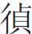
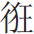

寶玉、襲人亦大家常事耳，寫得是已全領警幻意淫之訓。此回借劉嫗，却是寫阿鳳正傳，並非泛文，且伏「二進」「三進」及巧姐之歸著。
寶玉、襲人亦大家常事耳，寫得是已全領警幻意淫之訓。此回借劉嫗，却是寫阿鳳正傳，並非泛文，且伏「二進」「三進」及巧姐之歸著。
此回劉嫗一進榮國府，用周瑞家的，又過下回無痕，是無一筆寫一人文字之筆。
 風流真假一般看，借貸親疏觸眼酸。總是幻情無了處，銀燈挑盡泪漫漫。
風流真假一般看，借貸親疏觸眼酸。總是幻情無了處，銀燈挑盡泪漫漫。
題曰：
朝叩富兒門，富兒猶未足。雖無千金酬，嗟彼勝骨肉。
却說秦氏因聽見寶玉從夢中喚他的乳名，心中自是納悶，又不好細問。彼時寶玉迷迷惑惑，若有所失。衆人忙端上桂圓湯來，呷了兩口，遂起身整衣。襲人伸手與他繫褲帶時，不覺伸手至大腿處，只覺冰凉一片黏濕。唬的忙退出手來，問是怎麽了。寶玉紅漲了臉，把他手一拈。襲人本是個聰明女子，年紀本又比寶玉大兩歲，近來也漸通人事，今見寶玉如此光景，心中便覺察了一半，不覺也羞的紅漲了臉面，
 存身分。遂不敢再問。既少通人事，無心者則再不復問矣；既問，則無限幽思，皆在於伏身之一笑，所以必當有偷試之一番。行文輕巧，皆出於自然，毫無一些勉强。妙極！仍舊理好衣裳，遂至賈母處來，胡亂吃畢晚飯，過這邊來。
存身分。遂不敢再問。既少通人事，無心者則再不復問矣；既問，則無限幽思，皆在於伏身之一笑，所以必當有偷試之一番。行文輕巧，皆出於自然，毫無一些勉强。妙極！仍舊理好衣裳，遂至賈母處來，胡亂吃畢晚飯，過這邊來。
襲人忙趁衆奶娘丫鬟不在旁時，另取出一件中衣來與寶玉換上。寶玉含羞央告道：「好姐姐，千萬別告訴別人，要緊！」襲人亦含羞笑問道：「你夢見什麽故事了？是必當問者。若不問則下文涉於唐突。是那裡流出來的些髒東西？」寶玉道：「一言難盡。」說著，便把夢中之事細說與襲人聽了，然後說至警幻所授雲雨之情，羞的襲人掩面伏身而笑。試想。寶玉亦素喜襲人柔媚姣俏，遂强襲人同領警幻所訓雲雨之事。數句文完一回提綱文字。襲人素知賈母已將自己與了寶玉的，今便如此，亦不為越禮， 寫出襲人身份。遂和寶玉偷試一番，幸得無人撞見。自此寶玉視襲人更與別個不同，伏下晴雯。襲人侍寶玉更為盡職。一段小兒女之態，可謂追魂攝魄之筆。暫且別無話說。一句(接)[結]住上回「紅樓夢」大篇文字，另起本回正文。
寫出襲人身份。遂和寶玉偷試一番，幸得無人撞見。自此寶玉視襲人更與別個不同，伏下晴雯。襲人侍寶玉更為盡職。一段小兒女之態，可謂追魂攝魄之筆。暫且別無話說。一句(接)[結]住上回「紅樓夢」大篇文字，另起本回正文。
按榮府中一宅中合算起來，人口雖不多，從上至下也有三四百丁；事雖不多，一天也有一二十件，竟如亂麻一般，並沒個頭緒可作綱領。正尋思從那一件事、自那一個人寫起方妙，恰好忽從千里之外、芥豆之微、小小一個人家，因與榮府略有些瓜葛，「略有些瓜葛」，是數十回後之正脉也。真千里伏綫。這日正往榮府中來，因此便就此一家說來，倒還是頭緒。你道這一家姓甚名誰，又與榮府有甚瓜葛？諸公若嫌瑣碎粗鄙呢，則快擲下此書，另覓好書去醒目；(加)[夾]雜世態，巧伏下文。若謂聊可破悶時，待蠢物妙謙，是石頭口角。逐細言來。
方纔所說的這小小一家，乃本地人氏，姓王，祖上曾作過小小的一個京官，昔年曾與鳳姐之祖、王夫人之父識認，因貪王家的勢利，便連了宗認作侄兒。與賈雨村遙遙相對。 可憐。那時只有王夫人之大兄、鳳姐之父兩呼兩起，不過欲觀者自醒。與王夫人隨在京中的，知有此一門遠族，餘者皆不識認。强認親的榜樣。目今其祖已故，只有一個兒子，名喚王成，因家業蕭條，仍搬出城外原鄉中住去了。王成新近亦因病故，只有其子，小名狗兒，亦生一子，小名板兒，嫡妻劉氏，又生一女，名喚青兒。《石頭記》中公勛世宦之家以及草莽庸俗之族，無所不有，自能各得其妙。一家四口，仍以務農為業，因狗兒白日間又作些生計，劉氏又操井臼等事，青板姊妹〔一〕兩個無人看管，狗兒遂將岳母劉姥姥音老，出《諧聲字箋》。稱呼畢肖。接來一處過活。總是用(過)[逼]近法。這劉姥姥乃是個久經世代的老寡婦，膝下又無兒女，只靠兩畝薄田地度日。如今女婿接來養活，豈不願意，遂一心一計，幫趁著女兒女婿過活起來。
因這年秋盡冬初，天氣冷將上來，家中冬事未辦，狗兒未免心中煩慮，吃了幾杯悶酒，在家閒尋氣惱，病此病人不少，請來看狗兒。 貧苦人多有此等景象。劉氏不敢頂撞。 自「紅樓夢」一回至此，則珍饈中之虀耳，好看煞！因此劉姥姥看不過，乃勸道：「姑夫，你別嗔著我多嘴。咱們村莊人，那一個不是老老誠誠的，多大碗吃多大的飯？能兩畝薄田度日，方說的出來。你皆因年小時，託著你那老的福，妙稱，何肖之至！吃喝慣了，如今所以把持不住。有了錢就顧頭不顧尾，沒了錢就瞎生氣，成個什麽男子漢大丈夫了！為紈褲下針，却先從此等小處寫來。 此口氣自何處得來？ 英雄失足，千古同慨。笑煞天下一切。如今咱們雖離城住著，終是天子脚下。這長安城中，遍地都是錢，只可惜沒人會拿去罷了。在家跳蹋也沒中用的。」狗兒聽說，便急道：「你老只會炕頭兒上混說，難道叫我打劫偷去不成？」古人有錯用盜字之說，的是此句章本。劉姥姥道：「誰叫你偷去呢。到底大家想方法兒裁度，不然，那銀子錢自己跑到咱家來不成？」狗兒冷笑道：「有法兒還等到這會子呢！我又沒有收稅的親戚，駡死。作官的朋友，駡死。有什麽法子可想的？便有，也只怕他們未必來理我們呢！」
自「紅樓夢」一回至此，則珍饈中之虀耳，好看煞！因此劉姥姥看不過，乃勸道：「姑夫，你別嗔著我多嘴。咱們村莊人，那一個不是老老誠誠的，多大碗吃多大的飯？能兩畝薄田度日，方說的出來。你皆因年小時，託著你那老的福，妙稱，何肖之至！吃喝慣了，如今所以把持不住。有了錢就顧頭不顧尾，沒了錢就瞎生氣，成個什麽男子漢大丈夫了！為紈褲下針，却先從此等小處寫來。 此口氣自何處得來？ 英雄失足，千古同慨。笑煞天下一切。如今咱們雖離城住著，終是天子脚下。這長安城中，遍地都是錢，只可惜沒人會拿去罷了。在家跳蹋也沒中用的。」狗兒聽說，便急道：「你老只會炕頭兒上混說，難道叫我打劫偷去不成？」古人有錯用盜字之說，的是此句章本。劉姥姥道：「誰叫你偷去呢。到底大家想方法兒裁度，不然，那銀子錢自己跑到咱家來不成？」狗兒冷笑道：「有法兒還等到這會子呢！我又沒有收稅的親戚，駡死。作官的朋友，駡死。有什麽法子可想的？便有，也只怕他們未必來理我們呢！」
劉姥姥道：「這倒不然。謀事在人，成事在天。咱們謀到了，靠菩薩的保佑，有些機會，也未可知。我倒替你們想出一個機會來。當日你們原是和金陵王家四字便抵一篇世家傳。連過宗的，二十年前，他們看承你們還好，如今自然是你們拉硬屎，不肯去俯就他，天下事無有不可為者。總因打不破，若打破時何事不能？請看劉姥姥一篇議論，便應解得些個纔是。故疏遠起來。想當初我和女兒還去過一遭。補前文之未到處。他家的二小姐著實響快會待人的，倒不拿大。如今現是榮國府賈二老爺的夫人。聽得說，如今上了年紀，越發憐貧恤老，最愛齋僧敬道，捨米捨錢的。如今王府雖陞了邊任，只怕這二姑太太還認得咱們。你何不去走動走動，或者他念舊，有些好處，也未可定。只要他發一點好心，拔一根寒毛比咱們的腰還粗呢！」劉氏一旁接口道：「你老雖說得是，但只你我這樣個嘴臉，怎麽好到他門上去的？先不先，他們那些門上人也未必肯去通報。沒的去打嘴現世。」「打嘴現世」等字，誤盡多少蒼生，也能成全多少事體。
誰知狗兒名利心甚重，調侃語。聽如此一說，心下便有些活動起來。又聽他妻子這番話，便笑接道：「姥姥既如此說，况且當年你又見過這姑太太一次，何不你老人家明日就走一趟，先試試風頭再說。」劉姥姥道：「噯喲喲！口聲如聞。可是說的，『侯門深似海』，我是個什麽東西，他家人又不認得我，我去了也是白去的。」狗兒笑道：「不妨，我教你老一個法子：你竟帶了外孫子小板兒，先去找陪房周瑞，若見了他，就有些意思了。這周瑞先時曾和我父親交過一樁事，我們極好的。」欲赴豪門，必先交其僕。寫來一嘆。 畫出當日品行。劉姥姥道：「我也知道他的。只是許多時不走動，知道他如今是怎麽樣？這也說不得了，你又是個男人，又這樣個嘴臉，自然去不得，我們姑娘年輕媳婦子，也難賣頭賣脚去，倒還是捨著我這付老臉去碰一碰。果然有些好處，大家都有益，便是沒銀子來，我也到那公府侯門見一見世面，也不枉我一生。」說畢，大家笑了一回。當晚計議已定。
次日天未明，劉姥姥便起來梳洗了，又將板兒教訓幾句。那板兒纔亦五六歲的孩子，一無所知，聽見帶他進城逛〔二〕音光，去聲。遊也。出《諧聲字箋》。去，便喜的無不應承。於是劉姥姥帶他進城，找至寧榮街。街名。本地風光，妙！來至榮府大門石獅子前，只見簇簇的轎馬，劉姥姥便不敢過去，且彈彈衣服，又教了板兒幾句話，然後

「」字神理。到角門前。只見幾個挺胸叠肚、指手畫脚的人，坐在大凳上說東談西呢。不知如何想來，又為侯門三等豪奴寫照。 世家奴僕個個皆然，形容逼真。劉姥姥只得上來問：「太爺們納福。」衆人打量了他一會，便問是那裡來的。劉姥姥陪笑道：「我找太太的陪房周大爺的，煩那位太爺替我請他出來。」那些人聽了，都不瞅睬，半日方說道：「你遠遠的那墻角下等著，故套。一會子他們家有人就出來的。」內中有一年老的說道：「不要誤他的事，何苦耍他。」因向劉姥姥道：「那周大爺已往南邊去了。他在後一帶住著，他娘子却在家。你要找時，從這邊繞到後街上後門上問就是了。」有年紀人誠厚，亦是自然之理。 轉換法。寫門上豪奴不能儘是規矩，故用轉換法則不强硬，而筆氣自順。
劉姥姥聽了謝過，遂携了板兒，繞到後門上。只見門前歇著些生意擔子，也有賣吃的，也有賣頑意物件的，鬧烘烘三二十個孩子在那裡厮鬧。如何想來？合眼如見。劉姥姥便拉住了一個道：「我問哥兒一聲，有個周大娘可在家麽？」孩子道：「那個周大娘？我們這裡周大娘有三個呢，還有兩個周奶奶，不知是那一行當上的？」劉姥姥道：「是太太的陪房周瑞。」孩子道：「這個容易，你跟我來。」說著，跳跳躥躥的引著劉姥姥進了後門，因女眷，又是後門，故容易引入。至一院墻邊，指與劉姥姥道：「這就是他家。」又叫道：「周大娘，有個老奶奶來找你呢。」
周瑞家的在內聽說，忙迎了出來，問：「是那位？」劉姥姥忙迎上來問道：「好呀，周嫂子！」周瑞家的認了半日，方笑道：「劉姥姥，你好呀！你說說，能幾年，我就忘了。如此口角，從何處出來？請家裡來坐罷。」劉姥姥一壁走，一壁笑說道：「你老是貴人多忘事，那裡還記得我們了。」說著，來至房中。周瑞家的命僱的小丫頭倒上茶來吃著，周瑞家的又問板兒「長的這麽大了」，又問些別後閒語，再問劉姥姥：「今日還是路過，還是特來的？」問的有情理。 劉姥姥此時一團要緊事在心，有問不得不答，遞轉遞進，不敢陟然看之，令人可憐。而大英雄亦有若此者，所謂「欲圖大事，不拘小節。」劉姥姥便說：「原是特來瞧瞧你嫂子，二則也請請姑太太的安。若可以領我見一見更好，若不能，便借重嫂子轉致意罷了。」劉婆亦善於權變應酬矣。
周瑞家的聽了，便猜著幾分意思。只因昔年他丈夫周瑞爭買田地一事，其中多得狗兒之力，今見劉姥姥如此而來，心中難却其意，在今世，周瑞婦算是個懷情不忘的正人。二則也要顯弄自己體面。「也要顯弄」句為後文作地步也。陪房本心本意實事。 實有此等情理。聽如此說，便笑說：「姥姥你放心，自是有寵人聲口。大遠的誠心誠意的來了，豈有個不教你見個真佛去的？好口角。論理，人來客至回話，却不與我們相干。我們這裡都是各佔一枝兒：略將榮府中帶一帶。我們男的只管春秋兩季地租子，閒時只帶著小爺們出門就完了，我只管跟太太奶奶們出門的事。皆因你原是太太的親戚，又拿我當個人，投奔了我來，我竟破個例，給你通個信去。但只一件，姥姥有所不知，我們這裡又比不得五年前了。如今太太竟不大管事了，都是璉二奶奶當家。你道這璉二奶奶是誰？就是太太的內侄女，當日大舅爺的女兒，小名鳳哥的。」劉姥姥聽了，罕問道：「原來是他！怪道呢，我當日就說他不錯呢。我亦說不錯。這等說來，我今兒還得見他了。」周瑞家的道：「這個自然的。如今太太事多心煩，有客來了，略可推得去的也就推過去了，都是這鳳姑娘周旋迎待。今兒寧可不見太太，倒要見他一面，(禮)[理]勢必然。纔不枉這裡來一遭。」劉姥姥道：「阿彌陀佛！這全仗嫂子方便了。」周瑞家的道：「說那裡話。俗語說的：『與人方便，自己方便。』不過用我說一句話罷了，害著我什麽。」說著，便喚小丫頭子到倒廳上一絲不亂。悄悄的打聽打聽，老太太屋裡擺了飯了沒有。小丫頭去了。這裡二人又說些閒話。急忙中偏不就進去，又添一番議論，從中又伏下多少綫索，方見得大家勢派，出入不易，方見得周瑞家的處事詳細，即至後文，放筆寫鳳姐，亦不唐突。仍用冷子興說榮、寧舊筆法。
劉姥姥因說：「這位鳳姑娘今年大不過二十歲罷了，就這等有本事，當這樣的家，可是難得的。」周瑞家的聽了道：「嗐！我的姥姥，告訴不得你呢。這位鳳姑娘年紀雖小，行事却比世人都大呢。如今出挑的美人一樣的模樣兒，少說些有一萬個心眼子。再要賭口齒，十個會說話的男人也說他不過。回來你見了就信了。就只一件，待下人未免太嚴了些。」略點一句，伏下後文。說著，只見小丫頭回來說：「老太太屋裡已擺完了飯，二奶奶在太太屋裡呢。」周瑞家的聽了，連忙起身，催著劉姥姥說：「快走，快走！這一下來他吃飯是一個空子，非身臨其境者不知。咱們先等著去。若遲一步，回事的人也多了，難說話。再歇了中覺，越發沒了時候了。」寫出阿鳳勤勞冗雜，並驕矜珍貴等事來。 寫阿鳳勤勞等事，然却是虛筆，故於後文不犯。 有曰：富貴不還鄉，如衣錦夜行。今日周瑞家的得遇劉姥姥，實可謂錦衣不夜行者。說著一齊下了炕，打掃打掃衣服，又教了板兒幾句話，隨著周瑞家的，逶迤往賈璉的住宅來。
先到了倒廳，周瑞家的將劉姥姥安插在那裡略等一等。自己先過影壁，進了院門，知鳳姐未下來，先找著了鳳姐的一個心腹通房大丫頭，著眼。這也是書中一要緊人。《紅樓夢》內雖未見有名，想亦在副册內者也。名喚平兒的。名字真極，文雅則假。 三等奴僕，第次不亂。周瑞家的先將劉姥姥起初來歷說明，細！蓋平兒原不知有此一人耳。又說：「今日大遠的特來請安。當日太太是常會的，今兒不可不見，所以我帶了他進來了。等奶奶下來，我細細回明，奶奶想也不責備我莽撞的。」平兒聽了，便作了主意：各(自)[有]各自的身分。「叫他們進來，先在這裡坐著就是了。」暗透平兒身份。周瑞家的聽了，忙出去領他兩個進入院來。上了正房臺磯，小丫頭子打起了猩紅氈簾，是冬日。纔入堂屋，只聞一陣香撲了臉來，是劉姥姥鼻中。竟不辨是何香味，身子如在雲端裡一般。是劉姥姥身子。滿屋裡之物都是耀眼爭光，使人頭懸目眩。是劉姥姥頭目。劉姥姥斯時惟點頭咂嘴唸佛而已。六字盡矣，如何想來。 是寫府第奢華，還是寫劉姥姥粗夯？大抵村舍人家見此等氣象，未有不破膽驚心，迷魄醉魂者。劉姥姥猶能唸佛，已自出人頭地矣。於是來至東邊這間屋內，乃是賈璉的女兒大姐兒睡覺之所。記清。 不知不覺先到大姐寢室，豈非有緣？平兒站在炕沿邊，打量了劉姥姥兩眼，寫豪門侍兒。只得字法。問個好讓坐。劉姥姥見平兒遍身綾羅，插金帶銀，花容玉貌的，從劉姥姥心中目中略一寫，非平兒正傳。便當是鳳姐兒了。畢肖。 的真有是情理。纔要稱姑奶奶，忽聽周瑞家的稱他是平姑娘，又見平兒趕著周瑞家的稱周大娘〔三〕，方知不過是個有些體面的丫頭。於是讓劉姥姥和板兒上了炕，平兒和周瑞家的對面坐在炕沿上，小丫頭子斟上茶來吃茶。
劉姥姥只聽見「咯當」「咯當」的響聲，大有似乎打籮櫃篩面的一般，從劉姥姥心中意中幻擬出奇怪文字。  小家氣象。不免東瞧西望的。忽見堂屋中柱子上挂著一個匣子，底下又墜著一個秤砣般的一物，却不住的亂晃。從劉姥姥心中目中設譬擬想，真是鏡花水月。劉姥姥心中想著：「這是個什麽愛物兒？有煞用呢？」正呆時，三字有勁。陡聽得「當」地一聲，又若金鐘銅磬一般，不防倒唬的一展眼。接著又是一連八九下。細！是巳時。 寫得出。方欲問時，只見小丫頭子們一齊亂跑，說：「奶奶下來了。」劉姥姥不認得，偏不令問明，即以「奶奶下來了」結局，是畫雲龍妙手。平兒與周瑞家的忙起身，命劉姥姥：「只管坐著等，是時候我們來請你呢。」說著，都迎出去了。
小家氣象。不免東瞧西望的。忽見堂屋中柱子上挂著一個匣子，底下又墜著一個秤砣般的一物，却不住的亂晃。從劉姥姥心中目中設譬擬想，真是鏡花水月。劉姥姥心中想著：「這是個什麽愛物兒？有煞用呢？」正呆時，三字有勁。陡聽得「當」地一聲，又若金鐘銅磬一般，不防倒唬的一展眼。接著又是一連八九下。細！是巳時。 寫得出。方欲問時，只見小丫頭子們一齊亂跑，說：「奶奶下來了。」劉姥姥不認得，偏不令問明，即以「奶奶下來了」結局，是畫雲龍妙手。平兒與周瑞家的忙起身，命劉姥姥：「只管坐著等，是時候我們來請你呢。」說著，都迎出去了。
劉姥姥屏聲側耳默候。只聽遠遠有人笑聲，寫得侍僕婦。約有一二十婦人，衣裙悉率，漸入堂屋，往那邊屋內去了。又見兩三個婦人，都捧著大漆捧盒，進這東邊來等候。聽見那邊說了一聲「擺飯」，漸漸人纔都散出，只有伺候端菜的幾個人。半日鴉雀不聞之後，忽見二個人抬了一張炕桌來，放在這邊炕上，桌上碗盤森列，仍是滿滿的魚肉在內，不過略動了幾樣。白描入神。板兒一見了，便吵著要肉吃，劉姥姥一巴掌打下他去。忽見周瑞家的笑嘻嘻走過來，招手兒叫他。劉姥姥會意，於是携了板兒，下炕至堂屋中，周瑞家的又和他唧咕了一會，方到這邊屋裡來。
只見門外鏨銅鈎上懸著大紅撒花軟簾，從門外寫來。南窗下是炕，炕上大紅氈條，靠東邊板壁立著一個鎖子錦靠背與一個引枕，鋪著金心綠閃緞大坐褥，旁邊有銀唾沫盒。那鳳姐兒家常帶著紫貂昭君套，圍著攢珠勒子，穿著桃紅撒花襖，石青刻絲灰鼠披風，大紅洋縐銀鼠皮裙，粉光脂艶，端端正正坐在那裡，一段阿鳳房室起居器皿家常正傳，奢侈珍貴好奇貨註脚，寫來真是好看。手內拿著小銅火箸兒撥手爐內的灰。這一句是天然地設，非別文杜撰妄擬者。 至平，實至奇，稗官中未見此筆。平兒站在炕沿邊，捧著一個小小的填漆茶盤，盤內一小蓋鍾。鳳姐兒也不接茶，也不抬頭，神情宛肖。只管撥手爐內的灰，慢慢地問道：「怎麽還不請進來？」此等筆墨，真可謂追魂攝魄。 「還不請進來」五字，寫盡天下富貴人待窮親戚的態度。一面說，一面抬身要茶時，只見周瑞家的已帶了兩個人在地下站著了。這纔忙欲起身，猶未起身，滿面春風的問好，又嗔周瑞家的不早說。劉姥姥在地下已是拜了數拜，問姑奶奶安。鳳姐忙說：「周姐姐，快攙住不拜罷，請坐。我年輕，不大認得，可也不知是什麽輩數，不敢稱呼。」周瑞家的忙回道：「這就是我纔回的那個姥姥了。」鳳姐云「不敢稱呼」，周瑞家的云「那個姥姥」。凡三四句一氣讀下，方是鳳姐聲口。鳳姐點頭。劉姥姥已在炕沿上坐下，板兒便躲在背後，百般的哄他出來作揖，他死也不肯。
鳳姐笑二笑。道：「親戚們不大走動，都疏遠了。知道的呢，說你們棄厭我們，不肯常來；阿鳳真真可畏可惡。不知道的那起小人，還只當我們眼裡沒人似的。」偏會如此寫來，教人愛煞！劉姥姥忙唸佛如聞。道：「我們家道艱難，走不起，來了這裡，沒的給姑奶奶打嘴，就是管家爺們看著也不像。」鳳姐笑三笑。道：「這話叫人沒的噁心。不過借賴著祖父虛名，作個窮官兒罷了，誰家有什麽，不過是個舊日的空架子。俗語說，『朝廷還有三門子窮親』呢，何况你我。」點醒多少勢利鬼。說著，又問周瑞家的回了太太了沒有。一筆不肯落空，的是阿鳳。周瑞家的道：「如今等奶奶的示下。」鳳姐兒道：「你去瞧瞧，要是有人有事就罷，得閒呢就回，看怎麽說。」「看」之一字細極。周瑞家的答應著去了。
這裡鳳姐叫人抓些果子與板兒吃，剛問些閒話時，就有家下許多媳婦管事的來回話。不落空家務事，却不實寫。妙極！妙極！平兒回了，鳳姐道：「我這裡陪客呢，晚上再回。若有很要緊的，你就帶進來現辦。」平兒出去一會，進來說：「我都問了，沒有什麽緊事，我就叫他們散了。」能事者故自不凡。鳳姐兒點頭。只見周瑞家的回來，向鳳姐道：「太太說了，今日不得閒，二奶奶陪著便是一樣。多謝費心想著。白來逛逛呢便罷，若有甚說的，只管告訴二奶奶，都是一樣。」劉姥姥道：「也沒甚說的，不過是來瞧姑太太、姑奶奶，也是親戚們的情分。」周瑞家的道：「沒甚說的便罷，若有話，回二奶奶，是和太太一樣的。」周婦係真心為老嫗也，可謂得方便。一面說，一面遞眼色兒與劉姥姥。何如？余批不謬。劉姥姥會意，未語先飛紅的臉，開口告人難。欲待不說，今日又所為何來？只得忍耻老嫗有忍耻之心，故後有招大姐之事。作者並非泛寫，且為求親靠友下一棒喝。說道：「論理今兒初次見姑奶奶，却不該說的，只是大遠的奔了你老這裡來，也少不的說了。」剛說到這裡，只聽得二門上小厮們回說：「東府裡小大爺進來了。」鳳姐忙止劉姥姥：「不必說了。」一面便問：「你蓉大爺在那裡呢？」慣用此等橫雲斷山法。只聽一路靴子脚響，進來了一個十七八歲的少年，面目清秀，身材夭嬌，輕裘寶帶，美服華冠。如紈絝寫照。劉姥姥此時坐不是，立不是，藏沒處藏。鳳姐笑道：「你只管坐著，這是我侄兒。」劉姥姥方扭扭捏捏在炕沿上坐了。
賈蓉笑道：「我父親打發我來求嬸子，說上回老舅太太給嬸子的那架玻璃炕屏，明日請一個要緊的客，借了略擺一擺就送過來的。」夾寫鳳姐，好獎譽。鳳姐道：「說遲了一日，昨兒已經給了人了。」賈蓉聽說，嘻嘻的笑著，在炕沿下半跪道：「嬸子若不借，又說我不會說話了，又挨一頓好打呢。嬸子只當可憐侄兒罷。」鳳姐笑又一笑，凡五。道：「也沒見我們王家的東西都是好的不成？一般你們那裡放著那些東西，只是看不見我的纔罷。」賈蓉笑道：「那裡如這個好呢！只求開恩罷。」鳳姐道：「碰一點兒，你可仔細你的皮！」因命平兒拿了樓門鑰匙，傳幾個妥當人來抬去。賈蓉喜的眉開眼笑，忙說：「我親自帶了人拿去，別由他們亂碰。」說著便起身出去了。
這裡鳳姐忽又想起一事來，便向窗外叫：「蓉兒回來。」外面幾個人接聲說：「蓉大爺快回來。」賈蓉忙覆身轉來，垂手侍立，聽何指示。傳神之筆，寫阿鳳躍躍紙上。那鳳姐只管慢慢的吃茶，出了半日神，方笑道：「罷了，你且去罷。試想「且去」以前的豐態，其心思用意，作者無一筆不巧，無一事不麗。晚飯後你來再說罷。這會子有人，我也沒精神了。」賈蓉應了，方慢慢的退去。妙！却是從劉姥姥身邊目中寫來。◇度至下回。
這裡劉姥姥心神方安，方又說道：「今日我帶了你侄兒來，也不為別的，只因為他老子娘在家裡，連吃的都沒有。如今天又冷了，越想沒個派頭兒，只得帶了你侄兒奔了你老來。」說著又推板兒道：「你那爹在家怎麽教你了？打發咱們作煞事來？只顧吃果子咧。」鳳姐早已明白了，聽他不會說話，因笑止道：又一笑，凡六。自劉姥姥來凡笑五次，寫得阿鳳乖滑伶俐，合眼如立在前。◇若會說話之人，便聽他說了，阿鳳厲害處正在此。◇問看官：常有將挪移借貸已說明白了，彼仍推聾裝啞，這人(為)[比]阿鳳若何？呵呵，一嘆！「不必說了，我知道了。」因問周瑞家的道：「這劉姥姥不知可用過飯沒有呢？」劉姥姥忙道：「一早就往這裡趕咧，那裡還有吃飯的工夫咧。」鳳姐聽說，忙命快傳飯來。一時周瑞家的傳了一桌客饌來，擺在東邊屋內，過來帶了劉姥姥和板兒過去吃飯。鳳姐說道：「周姐姐，好生讓著些兒，我不能陪了。」於是過東邊房裡來。鳳姐又叫過周瑞家的去，問他方纔回了太太，說了些什麽？周瑞家的道：「太太說，他們家原不是一家子，不過因出一姓，當年又與太老爺在一處作官，偶然連了宗的。這幾年來也不大走動。當時他們來一遭，却也沒空了他們。今兒既來了瞧瞧我們，是他的好意思，窮親戚來看「是好意思」，余又自《石頭記》中見了，嘆嘆！也不可簡慢了。他便是有什麽說的，叫二奶奶裁度著就是了。」王夫人數語令余幾哭出。鳳姐聽了說道：「我說呢，既是一家子，我如何連影兒也不知道。」
說話時，劉姥姥已吃畢飯，拉了板兒過來，舔唇抹嘴的道謝。鳳姐笑道：「且請坐下，聽我告訴你老人家。方纔意思我已知道了。若論親戚之間，原該不待上門來就該有照應纔是。但如今家裡雜事太煩，太太漸上了年紀，一時想不到也是有的。點「不待上門就該有照應」數語，此亦於《石頭記》再見話頭。况是我近來接著管些事，都不大知道這些個親戚們。二則外頭看著這裡烈烈轟轟的，殊不知大有大的艱難去處，說與人也未必信罷了。今兒你既老遠的來了，又是頭一次見我張口，怎好叫你空回去呢。也是《石頭記》再見了，嘆嘆！可巧昨兒太太給我的丫頭們作衣裳的二十両銀子，我還沒動呢，你們不嫌少，就暫且拿了去罷。」鳳姐能事，在能體王夫人的心，託故周全，無過不及之弊。那劉姥姥先聽見告艱難，只當是沒有，心裡便突突的，可憐可嘆！後來聽見給他二十両，喜的渾身發癢起來，可憐可嘆！說道：「噯，我也是知道艱難的。但俗語說，『瘦死的駱駝比馬還大』，憑的怎麽樣，你老拔根寒毛比我們的腰還粗呢！」周瑞家的在旁聽他說的粗鄙，只管使眼色止他。鳳姐聽了，笑而不睬，只命平兒把昨兒那包銀子拿來，再拿一串錢來，這樣常例亦再見。都送至劉姥姥跟前。鳳姐乃道：「這是二十両銀子，暫且給這孩子做件冬衣罷。若不拿著，可真是怪我了。這串錢僱了車子坐罷。改日無事，只管來逛逛，方是親戚間的意思。天也晚了，也不虛留你們了，到家裡該問好的問個好兒罷。」口角春風，如聞其聲。一面說，一面就站起來了。
劉姥姥只管千恩萬謝，拿了銀錢，隨周瑞家的出來。至外厢房，周瑞家的方道：「我的娘！你見了他怎麽倒不會說話了？開口就是『你侄兒』。我說句不怕你惱的話，便是親侄兒，也要說和柔些。那蓉大爺纔是他的正經侄兒呢，他怎麽又跑出這麽個侄兒來了。」與前「眼色」針對，可見文章中無一個閒字。◇為財勢一哭。 不自量者每每有之，而能不露圭角，形諸無事，鳳姐亦可謂人豪矣。劉姥姥笑道：「我的嫂子，赧顔如見。我見了他，心眼裡愛還愛不過來，那裡還說上話了。」二人說著，又至周瑞家。坐了片時，劉姥姥便要留下一塊銀，與周瑞家的兒女買果子吃，周瑞家的如何放在眼裡，執意不肯。劉姥姥感謝不盡，仍從後門去了。正是：
得意濃時易接濟，受恩深處勝親朋。
「一進榮府」一回，曲折頓挫，筆如游龍，且將豪華舉止令觀者已得大概，想作者應是心花欲開之候。
借劉嫗入阿鳳正文，「送宮花」寫「金玉初聚」為引，作者真筆似游龍，變幻難測，非細究至再三再四不記數，那能領會也？嘆嘆！
總評：夢裡風流，醒後風流，試問何真何假？劉姆乞謀，蓉兒借求，多少顛倒相酬。英雄反正用機籌，不是死生看守。
〔一〕原作「青板姊弟」，據己、庚本改。按：據前文，青兒、板兒並非姊弟關係，而「姊妹」則可泛指姐妹、兄妹、姐弟等關係。
〔二〕原作「 
〔三〕原作「周大嫂」，參諸本改。書中他處平兒均稱周瑞家的為「周大娘」。
本章完!